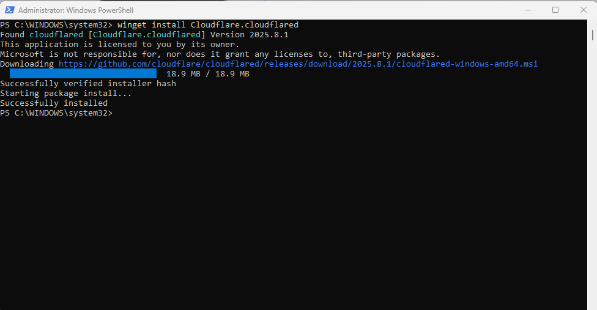
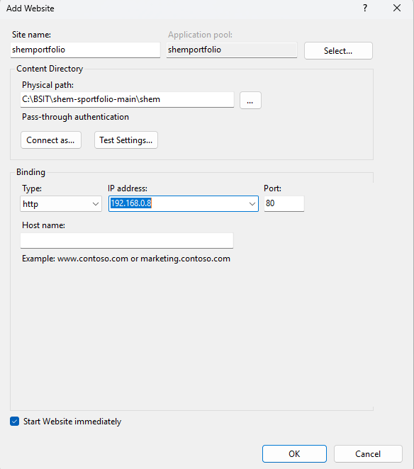
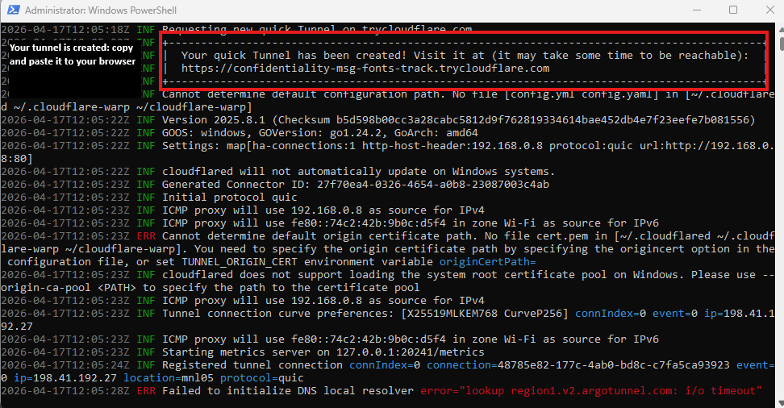

Using Cloudflare Tunnel to bypass ISP blocks & Routers
Normally, ISPs block your public IP from being a "host". Cloudflare Tunnels create a secure outbound bridge from your PC to the world, giving you a public .trycloudflare.com link for free.
First, we need the tool that builds the "bridge". Open PowerShell as Administrator and run:

Open IIS Manager and look at your "Bindings". Most sites use port 80 or 8080. Make sure your site is Started.

Now, run the command to start the tunnel. Replace the IP/Port with your IIS details:
If your site uses a specific IP inside IIS, use this instead:
Look at the PowerShell output. You will see a big box with a link that looks like this:
You're live! Anyone with this link can now visit your local IIS website from anywhere in the world.

--http-host-header localhost flag to fix this.index.html or index.php file.